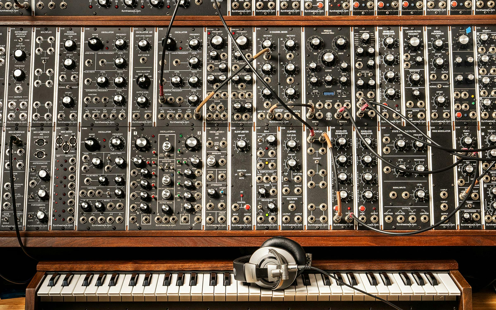
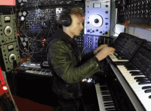

I'm glad you asked, on this webpage I will explain the innerworkings and outer expression of synthesizers.

A synthesizer is a electronic musical instrument. It uses electrical circuits to create soundwaves. Synthesizers are at the center of my heart! The sound created by synths begins in the oscilator - a device that transforms currents into a humming/buzzing sounds. Through the use of filters - this buzzing can be controled and altered. Tone, Pitch, and Resonance can be adjusted - a third component, known as a amplifier controls the volume and "brightness".

Most synthesizers are controlled by keyboards - that automatically program filters to set pitches for each key. The most lovely synthesizers have a variety of presets that alter the sound that the keys create. This varies from traditional piano-sets to futuristic alien sounding ones.
The most lovely synthesizer in my opinion is the MIDI orchid. The orchid uses a chord selection and automatic scaler - this helps a ton in fast-paced track making. It is also helpful for those who are familar with music theory but not the piano/keyboard. Another good synthesizer is the touch capacitance synth, this synth can be connected to objects that carry electrical currents. By using wires and some patience you can play music through forks and fruit! very very cool stuff.
Here is a list of my electronic music reccommendations - all of which were created using synthesizers